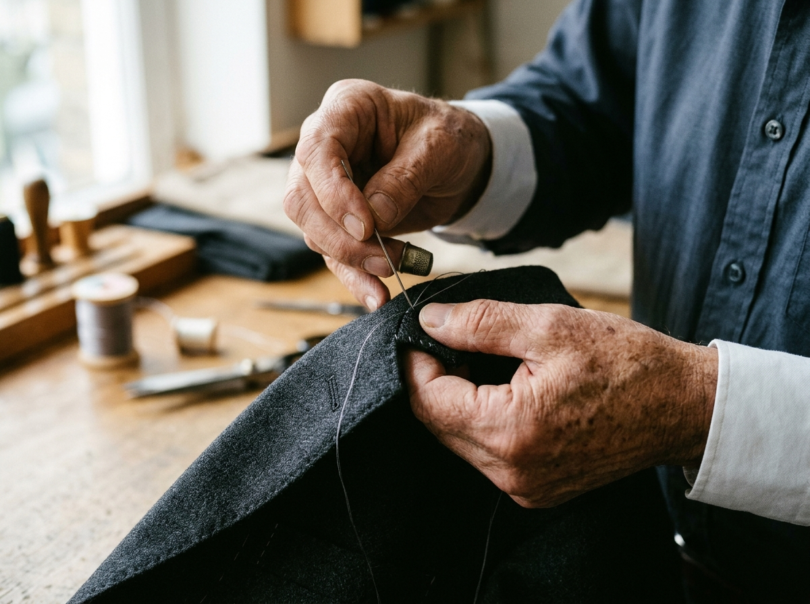
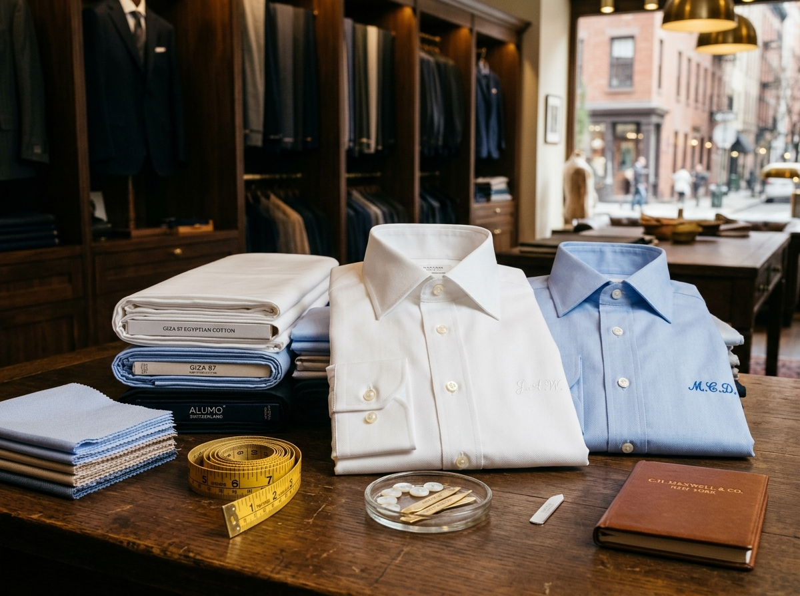

We believe that every man deserves a suit tailored to fit like a glove. Our bespoke process combines traditional hand-stitching with master pattern drafting, sculpted precisely to your posture and silhouette.

Our Master Tailor takes comprehensive anatomical measurements: shoulder slope, back posture, chest drape, and leg break. You select your lapel width, single or double-breasted closure, vents, lining, and custom horn buttons.
Each pattern is drawn by hand onto paper, chalked onto luxury wool, and individually cut. Master Wo assembles the full horsehair chest canvas and attaches the floating interlining for structure that conforms to your body with age.
You try on the unfinished basted garment in our private Manhattan fitting suite. Every seam, buttonhole, and silhouette detail is examined and calibrated before final hand-pressing and handover.

"Every man should have a custom dress shirt... or two... or five." Whether attending a black-tie gala, an important board meeting, or looking for everyday sartorial luxury, our custom dress shirts are cut to your exact neck, shoulder, and wrist proportions.